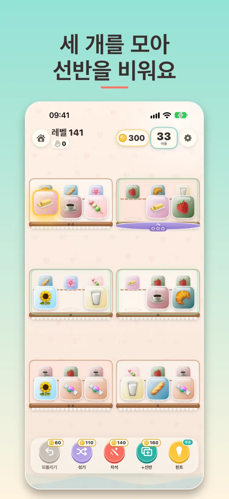
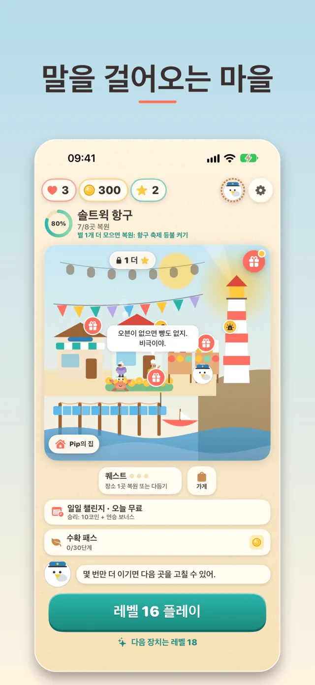
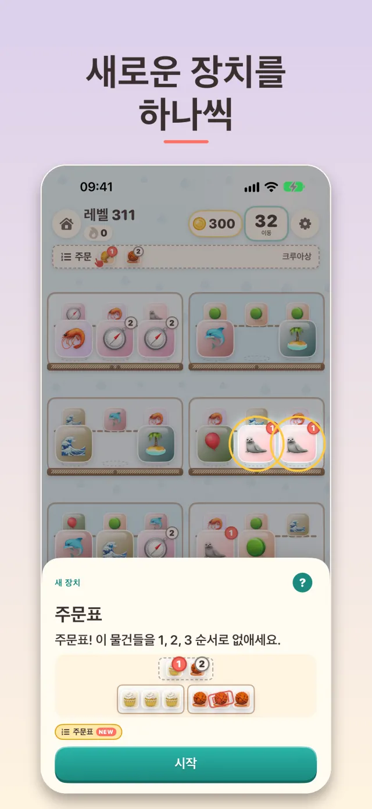
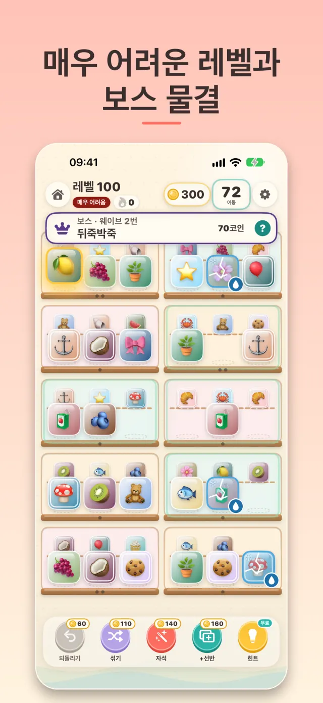
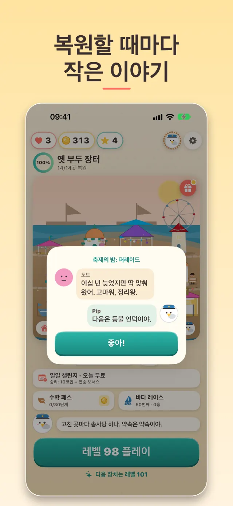
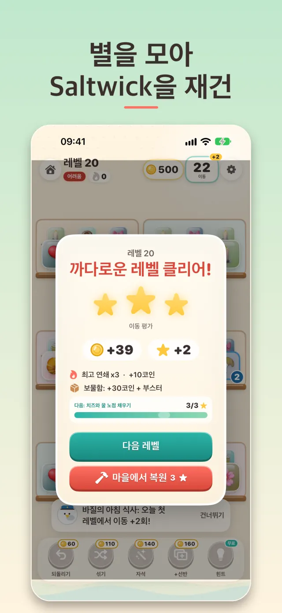

새로운 장치를 하나씩
- 금 간 선반, 활송로, 회전대, 카운터, 눈보라, 주문표가 얼음, 자물쇠, 선물, 사슬, 상자, 안개, 시간제한 레벨, 컨베이어 벨트에 더해집니다
- 레벨 시작 시트가 첫 수를 두기 전에 그 레벨의 물건으로 새 장치를 보여 주고, "게임 방법" 가이드에서 모든 규칙을 한 번의 탭으로 확인할 수 있어요
- 장치끼리 조합되고, 변형이 등장하고, 두 번 교대 레벨에서는 두 번째 물건 물결이 밀려옵니다
3매치로 아늑한 마을 복원
선반을 정리하고, 세 개를 맞추고, 바닷가 마을을 되살려요. 그곳에 사는 사람들도 만나 보세요.
28초로 보는 Saltwick 항구, 레벨 시작 시트, 레벨 141, 그리고 복원.






선반 사이로 물건을 옮기고 같은 물건 세 개를 모아 치우세요. 모든 레벨에는 반드시 풀이가 있고, 이길 때마다 별을 받습니다. 별로 등대, 카페, 가로등까지 Saltwick 마을을 하나씩 복원하세요.
하트는 3개입니다. 레벨 13부터는 레벨에 실패하면 하트를 하나 잃고(처음 레벨들은 무료로 다시 할 수 있어요), 잃은 하트는 2시간마다 하나씩 돌아옵니다. 상점에서 코인으로 채울 수 있고, 항구 VIP는 하트를 4개로 늘려 주며, 스타터 팩에는 1시간 무제한 하트가 들어 있습니다.
레벨 10 전에는 없습니다. 그 뒤로 보상 영상(하트 1개, 몇 수 추가, 무료 부스터)은 언제나 직접 선택하는 것이고 하루 최대 10회입니다. 레벨 15부터는 일부 승리 뒤에 짧은 광고가 나올 수 있는데, 하루 최대 5회이고 패배 뒤에는 절대 나오지 않습니다. "광고 제거"(1회 구매)와 항구 VIP는 이 광고를 끄며, 선택형 영상은 그대로 남습니다. 레벨 1 직후 게임이 광고 동의(EEA, 영국, 스위스)와 광고 식별자 사용 허용 여부를 묻습니다. 거부해도 광고가 맞춤형이 아니게 될 뿐입니다.
모두 선택 사항입니다. 500, 1,400, 3,100, 8,500코인 팩; 900코인, 부스터 6개, 1시간 무제한 하트가 든 1회성 스타터 팩; 월간 구독인 항구 VIP는 매일 60코인, 주간 상자, 하트 4개째, 레벨 사이 광고 없음; 28일 시즌의 수확 패스 프리미엄; 그리고 "광고 제거". 가격은 모든 구매 버튼 옆에 App Store 통화로 표시되고, 결제 전에 Apple이 확인을 요청합니다. 코인은 이어하기, 하트, 부스터에 쓰이며 레벨의 풀이를 바꾸지 않습니다. 설정에서 하루 지출 한도를 정할 수 있어요.
게임의 상점을 열고 구매할 때 쓴 Apple 계정으로 로그인한 채 "구매 복원"을 탭하세요. 항구 VIP는 iOS 설정 > 내 이름 > 구독에서 갱신일 24시간 전까지 해지하지 않으면 매달 갱신됩니다. 환불은 Apple이 처리합니다.
네, 로그인되어 있을 때만요. 일일 챌린지 점수와 주간 바다 레이스 승리 수가 두 개의 순위표에 올라가고, 91개의 업적이 진행 상황을 기록합니다. 로그아웃 상태에서는 아무것도 보내지 않고 게임은 똑같이 플레이됩니다. 자체 로그인 화면은 절대 띄우지 않아요.
저희는 아무것도 수집하지 않습니다. 계정도, 분석도, 자체 서버도 없어요. 진행 상황은 iPhone에 저장됩니다(이 버전에는 iCloud 동기화가 없습니다). 광고는 Google AdMob이 제공하며 일반적인 광고 데이터를 받고, 맞춤 광고는 허용했을 때만 이루어집니다. Game Center 점수와 구매는 Apple이 처리합니다. 자세한 내용은 개인정보 처리방침에 있습니다.
iOS 17 이상의 iPhone. iPad에서는 iPhone 호환 모드로 실행됩니다. 한국어, 영어, 독일어, 프랑스어, 스페인어, 이탈리아어, 포르투갈어(브라질), 루마니아어, 일본어 지원.
App Store에서 무료. Pip이 항구에서 기다리고 있어요.